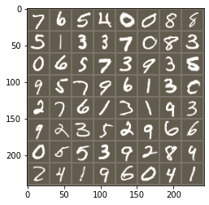
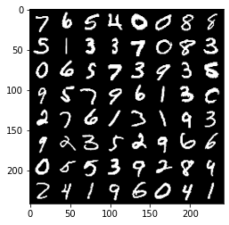
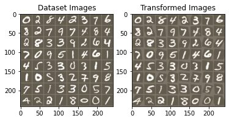

Image Alignment
Contents


Image Alignment¶
By Neuromatch Academy
Content creators: Kaleb Vinehout
Production editor: Spiros Chavlis
Our 2021 Sponsors, including Presenting Sponsor Facebook Reality Labs

Objective¶
This notebook will give you starting points to perform Spatial Transformers. These can be used for registraion of images. This is useful when comparing multiple datasets together. Check out https://arxiv.org/abs/1506.02025 for more details.These can also be used to plug into any CNN architecture to deal with dataset rotations and scale invariance in a given dataset
Spatial transformers contain three main parts.The first is a localizaion net the second is grid generator and the last is a sampler.
Intro to Image Alignment¶
Image Alignment Applications¶
To answer many biological questions, it is necessary to align sets of images together
Use Spatial Transfomers as a preprocessing step for any CNN achitecutre. This could be done before facial recognition in order to crop and align images before spatial recognition.
Acknowledgments:¶
This Notebook was developed by Kaleb Vinehout. It borrows from material by Ghassen Hamrouni, Asror Wali, and Erwin Russel.
Setup¶
Install dependencies¶
# @title Install dependencies
!pip install scikit-image --quiet
!pip install Pillow --quiet
!pip install n2v==0.3.0
!pip install csbdeep --quiet
Collecting n2v==0.3.0
Downloading n2v-0.3.0-py2.py3-none-any.whl (42 kB)
|████████████████████████████████| 42 kB 994 kB/s
?25hCollecting ruamel.yaml>=0.16.10
Downloading ruamel.yaml-0.17.10-py3-none-any.whl (108 kB)
|████████████████████████████████| 108 kB 21.7 MB/s
?25hCollecting keras<2.4.0,>=2.1.1
Downloading Keras-2.3.1-py2.py3-none-any.whl (377 kB)
|████████████████████████████████| 377 kB 23.2 MB/s
?25hRequirement already satisfied: tifffile>=2020.5.11 in /usr/local/lib/python3.7/dist-packages (from n2v==0.3.0) (2021.7.2)
Collecting imagecodecs>=2020.2.18
Downloading imagecodecs-2021.7.30-cp37-cp37m-manylinux_2_17_x86_64.manylinux2014_x86_64.whl (29.6 MB)
|████████████████████████████████| 29.6 MB 45 kB/s
?25hRequirement already satisfied: Pillow in /usr/local/lib/python3.7/dist-packages (from n2v==0.3.0) (7.1.2)
Collecting csbdeep<0.7.0,>=0.6.0
Downloading csbdeep-0.6.2-py2.py3-none-any.whl (72 kB)
|████████████████████████████████| 72 kB 1.0 MB/s
?25hRequirement already satisfied: scipy in /usr/local/lib/python3.7/dist-packages (from n2v==0.3.0) (1.4.1)
Requirement already satisfied: matplotlib in /usr/local/lib/python3.7/dist-packages (from n2v==0.3.0) (3.2.2)
Requirement already satisfied: numpy in /usr/local/lib/python3.7/dist-packages (from n2v==0.3.0) (1.19.5)
Requirement already satisfied: tqdm in /usr/local/lib/python3.7/dist-packages (from n2v==0.3.0) (4.41.1)
Requirement already satisfied: six in /usr/local/lib/python3.7/dist-packages (from n2v==0.3.0) (1.15.0)
Collecting h5py<3
Downloading h5py-2.10.0-cp37-cp37m-manylinux1_x86_64.whl (2.9 MB)
|████████████████████████████████| 2.9 MB 43.2 MB/s
?25hRequirement already satisfied: keras-preprocessing>=1.0.5 in /usr/local/lib/python3.7/dist-packages (from keras<2.4.0,>=2.1.1->n2v==0.3.0) (1.1.2)
Collecting keras-applications>=1.0.6
Downloading Keras_Applications-1.0.8-py3-none-any.whl (50 kB)
|████████████████████████████████| 50 kB 5.6 MB/s
?25hRequirement already satisfied: pyyaml in /usr/local/lib/python3.7/dist-packages (from keras<2.4.0,>=2.1.1->n2v==0.3.0) (3.13)
Collecting ruamel.yaml.clib>=0.1.2
Downloading ruamel.yaml.clib-0.2.6-cp37-cp37m-manylinux1_x86_64.whl (546 kB)
|████████████████████████████████| 546 kB 38.2 MB/s
?25hRequirement already satisfied: cycler>=0.10 in /usr/local/lib/python3.7/dist-packages (from matplotlib->n2v==0.3.0) (0.10.0)
Requirement already satisfied: python-dateutil>=2.1 in /usr/local/lib/python3.7/dist-packages (from matplotlib->n2v==0.3.0) (2.8.1)
Requirement already satisfied: kiwisolver>=1.0.1 in /usr/local/lib/python3.7/dist-packages (from matplotlib->n2v==0.3.0) (1.3.1)
Requirement already satisfied: pyparsing!=2.0.4,!=2.1.2,!=2.1.6,>=2.0.1 in /usr/local/lib/python3.7/dist-packages (from matplotlib->n2v==0.3.0) (2.4.7)
Installing collected packages: h5py, keras-applications, ruamel.yaml.clib, keras, ruamel.yaml, imagecodecs, csbdeep, n2v
Attempting uninstall: h5py
Found existing installation: h5py 3.1.0
Uninstalling h5py-3.1.0:
Successfully uninstalled h5py-3.1.0
Attempting uninstall: keras
Found existing installation: Keras 2.4.3
Uninstalling Keras-2.4.3:
Successfully uninstalled Keras-2.4.3
ERROR: pip's dependency resolver does not currently take into account all the packages that are installed. This behaviour is the source of the following dependency conflicts.
tensorflow 2.5.0 requires h5py~=3.1.0, but you have h5py 2.10.0 which is incompatible.
Successfully installed csbdeep-0.6.2 h5py-2.10.0 imagecodecs-2021.7.30 keras-2.3.1 keras-applications-1.0.8 n2v-0.3.0 ruamel.yaml-0.17.10 ruamel.yaml.clib-0.2.6
# Imports
import glob
import time
import sklearn.decomposition
import numpy as np
import matplotlib.pyplot as plt
import torch
import torch.nn as nn
import torch.optim as optim
import torch.nn.functional as F
import torchvision
from torchvision import transforms
from torchvision.utils import make_grid
from torchvision.datasets import ImageFolder
from torchvision import datasets, transforms
from PIL import Image
from skimage.util import random_noise
Figure settings¶
# @title Figure settings
%matplotlib inline
plt.ion() # interactive mode
Set device (GPU or CPU). Execute set_device()¶
# @title Set device (GPU or CPU). Execute `set_device()`
# especially if torch modules used.
# inform the user if the notebook uses GPU or CPU.
def set_device():
device = "cuda" if torch.cuda.is_available() else "cpu"
if device != "cuda":
print("GPU is not enabled in this notebook. \n"
"If you want to enable it, in the menu under `Runtime` -> \n"
"`Hardware accelerator.` and select `GPU` from the dropdown menu")
else:
print("GPU is enabled in this notebook. \n"
"If you want to disable it, in the menu under `Runtime` -> \n"
"`Hardware accelerator.` and select `None` from the dropdown menu")
return device
device = set_device()
GPU is enabled in this notebook.
If you want to disable it, in the menu under `Runtime` ->
`Hardware accelerator.` and select `None` from the dropdown menu
Data loading¶
Loader for classic MNIST as an example¶
Download MNIST dataset¶
# @title Download MNIST dataset
import tarfile, requests, os
fname = 'MNIST.tar.gz'
name = 'MNIST'
url = 'https://osf.io/y2fj6/download'
if not os.path.exists(name):
print('\nDownloading MNIST dataset...')
r = requests.get(url, allow_redirects=True)
with open(fname, 'wb') as fh:
fh.write(r.content)
print('\nDownloading MNIST completed.')
if not os.path.exists(name):
with tarfile.open(fname) as tar:
tar.extractall()
os.remove(fname)
else:
print('MNIST dataset is dowloaded.')
Downloading MNIST dataset...
Downloading MNIST completed.
# Training dataset
train_loader = torch.utils.data.DataLoader(
datasets.MNIST(root='.', train=True, download=False,
transform=transforms.Compose([
transforms.ToTensor(),
transforms.Normalize((0.1307,), (0.3081,))
])),
batch_size=64,
shuffle=True,
num_workers=2)
# Test dataset
test_loader = torch.utils.data.DataLoader(
datasets.MNIST(root='.', train=False, download=False,
transform=transforms.Compose([
transforms.ToTensor(),
transforms.Normalize((0.1307,), (0.3081,))
])),
batch_size=64,
shuffle=True,
num_workers=2)
Define functions to convert between Tensor and numpy image
def convert_image_np(inp):
"""Convert a Tensor to numpy image."""
inp = inp.numpy().transpose((1, 2, 0))
mean = np.array([0.485, 0.456, 0.406])
std = np.array([0.229, 0.224, 0.225])
inp = std * inp + mean
inp = np.clip(inp, 0, 1)
return inp
def convert2tensor(self, args):
data = np.asarray([e[0] for e in self.binary_train_dataset])
target = np.asarray([e[1] for e in self.binary_train_dataset])
tensor_data = torch.from_numpy(data)
tensor_data = tensor_data.float()
tensor_target = torch.from_numpy(target)
train = data_utils.TensorDataset(tensor_data, tensor_target)
train_loader = data_utils.DataLoader(train, batch_size=args.batch_size, shuffle = True)
return train_loader
Plot the data
## Display Images
# Get a batch of training data
data = next(iter(test_loader))[0].to(device)
input_tensor = data.cpu()
in_grid = convert_image_np(torchvision.utils.make_grid(input_tensor))
# Plot the images
plt.figure()
plt.imshow(in_grid)
plt.show()
# plot ONE image
plt.figure()
plt.imshow(torchvision.utils.make_grid(input_tensor).numpy().transpose((1, 2, 0)))
plt.show()


Spatial Transformer on images¶
Spatial Transformer Network¶
class Net(nn.Module):
def __init__(self):
super(Net, self).__init__()
self.conv1 = nn.Conv2d(1, 10, kernel_size=5)
self.conv2 = nn.Conv2d(10, 20, kernel_size=5)
self.conv2_drop = nn.Dropout2d()
self.fc1 = nn.Linear(320, 50)
self.fc2 = nn.Linear(50, 10)
# Spatial transformer localization-network
self.localization = nn.Sequential(
nn.Conv2d(1, 8, kernel_size=7),
nn.MaxPool2d(2, stride=2),
nn.ReLU(True),
nn.Conv2d(8, 10, kernel_size=5),
nn.MaxPool2d(2, stride=2),
nn.ReLU(True)
)
# Regressor for the 3 * 2 affine matrix
self.fc_loc = nn.Sequential(
nn.Linear(10 * 3 * 3, 32),
nn.ReLU(True),
nn.Linear(32, 3 * 2)
)
# Initialize the weights/bias with identity transformation
self.fc_loc[2].weight.data.zero_()
self.fc_loc[2].bias.data.copy_(torch.tensor([1, 0, 0, 0, 1, 0], dtype=torch.float))
# Spatial transformer network forward function
def stn(self, x):
xs = self.localization(x)
xs = xs.view(-1, 10 * 3 * 3)
theta = self.fc_loc(xs)
theta = theta.view(-1, 2, 3)
grid = F.affine_grid(theta, x.size())
x = F.grid_sample(x, grid)
return x
def forward(self, x):
# transform the input
x = self.stn(x)
# Perform the usual forward pass
x = F.relu(F.max_pool2d(self.conv1(x), 2))
x = F.relu(F.max_pool2d(self.conv2_drop(self.conv2(x)), 2))
x = x.view(-1, 320)
x = F.relu(self.fc1(x))
x = F.dropout(x, training=self.training)
x = self.fc2(x)
return F.log_softmax(x, dim=1)
Train and Test functions for the STN¶
model = Net().to(device)
optimizer = optim.SGD(model.parameters(), lr=0.01)
Train function¶
def train(train_loader, optimizer, epoch, device):
model.train()
for batch_idx, (data, target) in enumerate(train_loader):
data, target = data.to(device), target.to(device)
optimizer.zero_grad()
output = model(data)
loss = F.nll_loss(output, target)
loss.backward()
optimizer.step()
if batch_idx % 500 == 0:
print('Train Epoch: {} [{}/{} ({:.0f}%)]\tLoss: {:.6f}'.format(
epoch, batch_idx * len(data), len(train_loader.dataset),
100. * batch_idx / len(train_loader), loss.item()))
Test function¶
def test(test_loader, device):
with torch.no_grad():
model.eval()
test_loss, correct = 0, 0
for data, target in test_loader:
data, target = data.to(device), target.to(device)
output = model(data)
# sum up batch loss
test_loss += F.nll_loss(output, target, size_average=False).item()
# get the index of the max log-probability
pred = output.max(1, keepdim=True)[1]
correct += pred.eq(target.view_as(pred)).sum().item()
test_loss /= len(test_loader.dataset)
print('\nTest set: Average loss: {:.4f}, Accuracy: {}/{} ({:.0f}%)\n'
.format(test_loss, correct, len(test_loader.dataset),
100. * correct / len(test_loader.dataset)))
Run Train and test the data¶
num_epochs = 20
for epoch in range(1, num_epochs + 1):
train(train_loader, optimizer, epoch, device)
test(test_loader, device)
Train Epoch: 1 [0/60000 (0%)] Loss: 2.283750
Train Epoch: 1 [32000/60000 (53%)] Loss: 0.815321
Test set: Average loss: 0.3277, Accuracy: 9028/10000 (90%)
Train Epoch: 2 [0/60000 (0%)] Loss: 0.560269
Train Epoch: 2 [32000/60000 (53%)] Loss: 0.419435
Test set: Average loss: 0.1251, Accuracy: 9618/10000 (96%)
Train Epoch: 3 [0/60000 (0%)] Loss: 0.182603
Train Epoch: 3 [32000/60000 (53%)] Loss: 0.332343
Test set: Average loss: 0.0900, Accuracy: 9729/10000 (97%)
Train Epoch: 4 [0/60000 (0%)] Loss: 0.464175
Train Epoch: 4 [32000/60000 (53%)] Loss: 0.170884
Test set: Average loss: 0.0693, Accuracy: 9783/10000 (98%)
Train Epoch: 5 [0/60000 (0%)] Loss: 0.176186
Train Epoch: 5 [32000/60000 (53%)] Loss: 0.244473
Test set: Average loss: 0.0679, Accuracy: 9785/10000 (98%)
Train Epoch: 6 [0/60000 (0%)] Loss: 0.136274
Train Epoch: 6 [32000/60000 (53%)] Loss: 0.341099
Test set: Average loss: 0.0524, Accuracy: 9834/10000 (98%)
Train Epoch: 7 [0/60000 (0%)] Loss: 0.157048
Train Epoch: 7 [32000/60000 (53%)] Loss: 0.059608
Test set: Average loss: 0.0505, Accuracy: 9842/10000 (98%)
Train Epoch: 8 [0/60000 (0%)] Loss: 0.099384
Train Epoch: 8 [32000/60000 (53%)] Loss: 0.076582
Test set: Average loss: 0.0534, Accuracy: 9826/10000 (98%)
Train Epoch: 9 [0/60000 (0%)] Loss: 0.037829
Train Epoch: 9 [32000/60000 (53%)] Loss: 0.046212
Test set: Average loss: 0.0516, Accuracy: 9837/10000 (98%)
Train Epoch: 10 [0/60000 (0%)] Loss: 0.022345
Train Epoch: 10 [32000/60000 (53%)] Loss: 0.163096
Test set: Average loss: 0.0444, Accuracy: 9855/10000 (99%)
Train Epoch: 11 [0/60000 (0%)] Loss: 0.151429
Train Epoch: 11 [32000/60000 (53%)] Loss: 0.318495
Test set: Average loss: 0.0459, Accuracy: 9845/10000 (98%)
Train Epoch: 12 [0/60000 (0%)] Loss: 0.137617
Train Epoch: 12 [32000/60000 (53%)] Loss: 0.071557
Test set: Average loss: 0.0399, Accuracy: 9872/10000 (99%)
Train Epoch: 13 [0/60000 (0%)] Loss: 0.074517
Train Epoch: 13 [32000/60000 (53%)] Loss: 0.090459
Test set: Average loss: 0.0455, Accuracy: 9853/10000 (99%)
Train Epoch: 14 [0/60000 (0%)] Loss: 0.023993
Train Epoch: 14 [32000/60000 (53%)] Loss: 0.072476
Test set: Average loss: 0.0432, Accuracy: 9858/10000 (99%)
Train Epoch: 15 [0/60000 (0%)] Loss: 0.094706
Train Epoch: 15 [32000/60000 (53%)] Loss: 0.355291
Test set: Average loss: 0.0467, Accuracy: 9860/10000 (99%)
Train Epoch: 16 [0/60000 (0%)] Loss: 0.271667
Train Epoch: 16 [32000/60000 (53%)] Loss: 0.041827
Test set: Average loss: 0.0445, Accuracy: 9875/10000 (99%)
Train Epoch: 17 [0/60000 (0%)] Loss: 0.182719
Train Epoch: 17 [32000/60000 (53%)] Loss: 0.095597
Test set: Average loss: 0.0408, Accuracy: 9869/10000 (99%)
Train Epoch: 18 [0/60000 (0%)] Loss: 0.059102
Train Epoch: 18 [32000/60000 (53%)] Loss: 0.136152
Test set: Average loss: 0.0374, Accuracy: 9881/10000 (99%)
Train Epoch: 19 [0/60000 (0%)] Loss: 0.042544
Train Epoch: 19 [32000/60000 (53%)] Loss: 0.032425
Test set: Average loss: 0.0328, Accuracy: 9897/10000 (99%)
Train Epoch: 20 [0/60000 (0%)] Loss: 0.085060
Train Epoch: 20 [32000/60000 (53%)] Loss: 0.210157
Test set: Average loss: 0.0369, Accuracy: 9888/10000 (99%)
Visualize the results¶
def visualize_stn():
with torch.no_grad():
# Get a batch of training data
data = next(iter(test_loader))[0].to(device)
input_tensor = data.cpu()
transformed_input_tensor = model.stn(data).cpu()
in_grid = convert_image_np(
torchvision.utils.make_grid(input_tensor))
out_grid = convert_image_np(
torchvision.utils.make_grid(transformed_input_tensor))
# Plot the results side-by-side
f, axarr = plt.subplots(1, 2)
axarr[0].imshow(in_grid)
axarr[0].set_title('Dataset Images')
axarr[1].imshow(out_grid)
axarr[1].set_title('Transformed Images')
return in_grid, out_grid
# Visualize the STN transformation on some input batch
[in_grid, out_grid] = visualize_stn()
plt.ioff()
plt.show()

Check out: https://aswali.github.io/WNet/ and this paper:https://arxiv.org/abs/1711.08506
Optional functions to use when examining effects of spatial transformer¶
Function for the Sørensen–Dice coefficient (DSC) to calculate the simularity of images¶
Function to Compare similarity of images
Compare the similarity of two images with the the Sørensen–Dice coefficient. See details here: https://en.wikipedia.org/wiki/S%C3%B8rensen%E2%80%93Dice_coefficient
def calc_dice(im1,im2):
"""
This calculates the DICE between two images. The maximum DICE is 1, the minimum is Zero.
Args:
- im1, im2: one of the imges to calcualte DICE coeffeicnet. Note image1.shape has to equal image2.shape
Returns:
- dice: the dice coeffeicent
"""
im1 = np.asarray(im1).astype(np.bool)
im2 = np.asarray(im2).astype(np.bool)
if im1.shape != im2.shape:
raise ValueError("Shape mismatch: im1 and im2 must have the same shape.")
# Compute Dice coefficient
intersection = np.logical_and(im1, im2)
dice = 2. * intersection.sum() / (im1.sum() + im2.sum())
print("The Dice is {}".format(dice))
return dice
Function to Add salt/pepper noise to the dataset¶
add noise class
def salt_pepper_noise(trainloader):
for data in trainloader:
img, _ = data[0], data[1]
s_and_p = torch.tensor(random_noise(img, mode='s&p',
salt_vs_pepper=0.5, clip=True))
return s_and_p
Question: Are there other types of noise you can add? What effect do different types of noise have? E.g., gasusian
Add noise to both train and test datasets
Function to remove nosie with noise2void¶
Import noise2void dependances, check out https://github.com/juglab/n2v for details
Import noise2void dependances¶
check out https://github.com/juglab/n2v for details
# @title Import `noise2void` dependances
# @markdown check out https://github.com/juglab/n2v for details
from n2v.models import N2VConfig, N2V
from csbdeep.utils import plot_history
from n2v.internals.N2V_DataGenerator import N2V_DataGenerator
Create a denoising fucntion¶
def noise2void(data, model_name, patch_size=64):
"""
Removes noise in 3d image using the noise 2 void method. Based on https://arxiv.org/abs/1811.10980 w/ this implementation: https://github.com/juglab/n2v
Args:
- data: Numpy array 2d to be deionised
- model: name of model to load, if provided this model is used to denoise instead of model made from data otherwise this is name given to model (ex:#model_name = 'n2v_3D_blk')
-patch_size: this is the size of patches in X and Y, default is 64
Returns:
- data_denoise: Numpy array noise removed
"""
# We create our DataGenerator-object.
datagen = N2V_DataGenerator()
# In the 'dims' parameter we specify the order of dimensions in the image files we are reading.
if data.ndim == 2:
print('2D image found to denosie')
dataZYX = data
data_exp = np.expand_dims(dataZYX, axis=(0, 1, 4)) # expand dimensions One at the front is used to hold a potential stack of images such as a movie, One at the end could hold color channels such as RGB. #expand dimensions One at the front is used to hold a potential stack of images such as a movie, One at the end could hold color channels such as RGB.
patch_shape = (patch_size, patch_size)
model_axis = 'YX'
print('arrary with extra dimensions is size of {}'.format(data_exp.shape))
print('patches are {}'.format(patch_shape))
# the base directory in which our model will live
basedir = 'models'
path = basedir + '/' + model_name
if not os.path.exists(path):
print(path)
# create model
patches = datagen.generate_patches_from_list(data_exp, shape=patch_shape)
print('patches shape {}'.format(patches.shape))
# Patches are created so they do not overlap.
# (Note: this is not the case if you specify a number of patches. See the docstring for details!)
# Non-overlapping patches enable us to split them into a training and validation set.
# modify split so set as a %
perc_95 = int(patches.shape[0] * 0.95)
X = patches[:perc_95] # this is 600/640
X_val = patches[perc_95:] # this is 40/640
# train model
# You can increase "train_steps_per_epoch" to get even better results at the price of longer computation.
fast = 128 # default
slow = 50 # to get better results? --> apply same model to Z plane
speed = fast
config = N2VConfig(X, unet_kern_size=3, train_steps_per_epoch=int(X.shape[0] / speed), train_epochs=20,
train_loss='mse', batch_norm=True, train_batch_size=4, n2v_perc_pix=0.198,
n2v_patch_shape=patch_shape, n2v_manipulator='uniform_withCP', n2v_neighborhood_radius=5)
# Let's look at the parameters stored in the config-object.
vars(config)
# We are now creating our network model.
model = N2V(config=config, name=model_name, basedir=basedir)
history = model.train(X, X_val)
print(sorted(list(history.history.keys())))
model.export_TF(name='Noise2Void - data',
description='This is the 3D Noise2Void for data.',
authors=["Kaleb Vinehout"],
test_img=X_val[0, ..., 0], axes=model_axis,
patch_shape=patch_shape)
# run prediction model on rest of data in 3D image
# A previously trained model is loaded by creating a new N2V-object without providing a 'config'.
model = N2V(config=None, name=model_name, basedir=basedir)
# Here we process the data.
# The 'n_tiles' parameter can be used if images are too big for the GPU memory.
# If we do not provide the 'n_tiles' parameter the system will automatically try to find an appropriate tiling.
data_denoise = model.predict(dataZYX, axes=model_axis) # , n_tiles=(2, 4, 4))
return data_denoise
Function to Segment image with W-net¶
Check out: https://aswali.github.io/WNet/ and this paper:https://arxiv.org/abs/1711.08506
The Wnet Class¶
class Block(nn.Module):
def __init__(self, in_filters, out_filters, seperable=True):
super(Block, self).__init__()
if seperable:
self.spatial1=nn.Conv2d(in_filters, in_filters, kernel_size=3, groups=in_filters, padding=1)
self.depth1=nn.Conv2d(in_filters, out_filters, kernel_size=1)
self.conv1=lambda x: self.depth1(self.spatial1(x))
self.spatial2=nn.Conv2d(out_filters, out_filters, kernel_size=3, padding=1, groups=out_filters)
self.depth2=nn.Conv2d(out_filters, out_filters, kernel_size=1)
self.conv2=lambda x: self.depth2(self.spatial2(x))
else:
self.conv1=nn.Conv2d(in_filters, out_filters, kernel_size=3, padding=1)
self.conv2=nn.Conv2d(out_filters, out_filters, kernel_size=3, padding=1)
self.relu1 = nn.ReLU()
self.dropout1 = nn.Dropout(0.65)
self.batchnorm1=nn.BatchNorm2d(out_filters)
self.relu2 = nn.ReLU()
self.dropout2 = nn.Dropout(0.65)
self.batchnorm2=nn.BatchNorm2d(out_filters)
def forward(self, x):
x = self.batchnorm1(self.conv1(x)).clamp(0)
x = self.relu1(x)
x = self.dropout1(x)
x = self.batchnorm2(self.conv2(x)).clamp(0)
x = self.relu2(x)
x = self.dropout2(x)
return x
class UEnc(nn.Module):
def __init__(self, squeeze, ch_mul=64, in_chans=3):
super(UEnc, self).__init__()
self.enc1=Block(in_chans, ch_mul, seperable=False)
self.enc2=Block(ch_mul, 2*ch_mul)
self.enc3=Block(2*ch_mul, 4*ch_mul)
self.enc4=Block(4*ch_mul, 8*ch_mul)
self.middle=Block(8*ch_mul, 16*ch_mul)
self.up1=nn.ConvTranspose2d(16*ch_mul, 8*ch_mul, kernel_size=3,
stride=2, padding=1, output_padding=1)
self.dec1=Block(16*ch_mul, 8*ch_mul)
self.up2=nn.ConvTranspose2d(8*ch_mul, 4*ch_mul, kernel_size=3,
stride=2, padding=1, output_padding=1)
self.dec2=Block(8*ch_mul, 4*ch_mul)
self.up3=nn.ConvTranspose2d(4*ch_mul, 2*ch_mul, kernel_size=3,
stride=2, padding=1, output_padding=1)
self.dec3=Block(4*ch_mul, 2*ch_mul)
self.up4=nn.ConvTranspose2d(2*ch_mul, ch_mul, kernel_size=3,
stride=2, padding=1, output_padding=1)
self.dec4=Block(2*ch_mul, ch_mul, seperable=False)
self.final=nn.Conv2d(ch_mul, squeeze, kernel_size=(1, 1))
self.softmax = nn.Softmax2d()
def forward(self, x):
enc1=self.enc1(x)
enc2=self.enc2(F.max_pool2d(enc1, (2, 2)))
enc3=self.enc3(F.max_pool2d(enc2, (2, 2)))
enc4=self.enc4(F.max_pool2d(enc3, (2, 2)))
middle=self.middle(F.max_pool2d(enc4, (2, 2)))
up1=torch.cat([enc4, self.up1(middle)], 1)
dec1=self.dec1(up1)
up2=torch.cat([enc3, self.up2(dec1)], 1)
dec2=self.dec2(up2)
up3=torch.cat([enc2, self.up3(dec2)], 1)
dec3=self.dec3(up3)
up4=torch.cat([enc1, self.up4(dec3)], 1)
dec4=self.dec4(up4)
final=self.final(dec4)
return final
class UDec(nn.Module):
def __init__(self, squeeze, ch_mul=64, in_chans=3):
super(UDec, self).__init__()
self.enc1=Block(squeeze, ch_mul, seperable=False)
self.enc2=Block(ch_mul, 2*ch_mul)
self.enc3=Block(2*ch_mul, 4*ch_mul)
self.enc4=Block(4*ch_mul, 8*ch_mul)
self.middle=Block(8*ch_mul, 16*ch_mul)
self.up1=nn.ConvTranspose2d(16*ch_mul, 8*ch_mul, kernel_size=3,
stride=2, padding=1, output_padding=1)
self.dec1=Block(16*ch_mul, 8*ch_mul)
self.up2=nn.ConvTranspose2d(8*ch_mul, 4*ch_mul, kernel_size=3,
stride=2, padding=1, output_padding=1)
self.dec2=Block(8*ch_mul, 4*ch_mul)
self.up3=nn.ConvTranspose2d(4*ch_mul, 2*ch_mul, kernel_size=3,
stride=2, padding=1, output_padding=1)
self.dec3=Block(4*ch_mul, 2*ch_mul)
self.up4=nn.ConvTranspose2d(2*ch_mul, ch_mul, kernel_size=3,
stride=2, padding=1, output_padding=1)
self.dec4=Block(2*ch_mul, ch_mul, seperable=False)
self.final=nn.Conv2d(ch_mul, in_chans, kernel_size=(1, 1))
def forward(self, x):
enc1 = self.enc1(x)
enc2 = self.enc2(F.max_pool2d(enc1, (2, 2)))
enc3 = self.enc3(F.max_pool2d(enc2, (2, 2)))
enc4 = self.enc4(F.max_pool2d(enc3, (2, 2)))
middle = self.middle(F.max_pool2d(enc4, (2, 2)))
up1 = torch.cat([enc4, self.up1(middle)], 1)
dec1 = self.dec1(up1)
up2 = torch.cat([enc3, self.up2(dec1)], 1)
dec2 = self.dec2(up2)
up3 = torch.cat([enc2, self.up3(dec2)], 1)
dec3 =self.dec3(up3)
up4 = torch.cat([enc1, self.up4(dec3)], 1)
dec4 = self.dec4(up4)
final=self.final(dec4)
return final
class WNet(nn.Module):
def __init__(self, squeeze, ch_mul=64, in_chans=3, out_chans=1000):
super(WNet, self).__init__()
if out_chans==1000:
out_chans=in_chans
self.UEnc=UEnc(squeeze, ch_mul, in_chans)
self.UDec=UDec(squeeze, ch_mul, out_chans)
def forward(self, x, returns='both'):
enc = self.UEnc(x)
if returns=='enc':
return enc
dec=self.UDec(F.softmax(enc, 1))
if returns=='dec':
return dec
if returns=='both':
return enc, dec
else:
raise ValueError('Invalid returns, returns must be in [enc dec both]')
Wnet train/test/loss¶
softmax = nn.Softmax2d()
criterionIdt = torch.nn.MSELoss()
def train_op(model, optimizer, input, k, img_size, psi=0.5):
enc = model(input, returns='enc')
d = enc.clone().detach()
n_cut_loss=soft_n_cut_loss(input, softmax(enc), img_size)
n_cut_loss.backward()
optimizer.step()
optimizer.zero_grad()
dec = model(input, returns='dec')
rec_loss=reconstruction_loss(input, dec)
rec_loss.backward()
optimizer.step()
optimizer.zero_grad()
return (model, n_cut_loss, rec_loss)
def reconstruction_loss(x, x_prime):
rec_loss = criterionIdt(x_prime, x)
return rec_loss
def test(device):
wnet = WNet.WNet(4)
synthetic_data=torch.rand((1, 3, 128, 128))
optimizer=torch.optim.SGD(wnet.parameters(), 0.001).to(device)
train_op(wnet, optimizer, synthetic_data)
def show_image(image):
img = image.numpy().transpose((1, 2, 0))
plt.imshow(img)
plt.show()